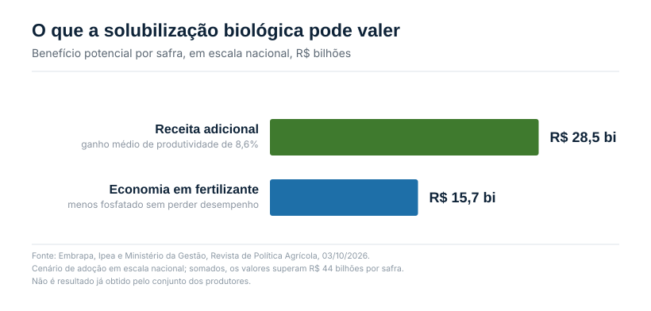
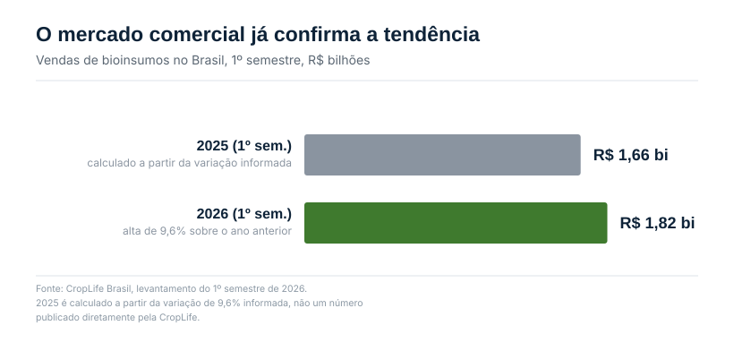

O estudo que colocou número no que a Ed. 02 já argumentava
Hoje, 3 de outubro, foi publicado um estudo na Revista de Política Agrícola assinado por pesquisadores da Empresa Brasileira de Pesquisa Agropecuária (Embrapa), do Instituto de Pesquisa Econômica Aplicada (Ipea) e do Ministério da Gestão e da Inovação em Serviços Públicos. O trabalho avaliou, em escala nacional, o impacto potencial da solubilização biológica de fosfatos na cultura da soja, a mesma tecnologia que a Ed. 02 detalhou em agosto, quando o MAP batia perto de US$ 890 a tonelada.
Naquela edição, o argumento era de fazenda: apenas 15% a 30% do fósforo aplicado é absorvido pela planta a cada ciclo, o resto fica retido no solo em formas que a raiz não acessa, e bactérias solubilizadoras destravam parte desse estoque parado. O estudo publicado hoje pega esse mesmo mecanismo e projeta o que ele vale se o país inteiro adotasse a tecnologia.
Os números por trás da manchete
A adoção em larga escala de microrganismos solubilizadores de fósforo pode acrescentar R$ 28,5 bilhões à receita anual da soja brasileira e reduzir em até R$ 15,7 bilhões os gastos com fertilizante fosfatado. O cálculo considerou ganho médio de produtividade de 8,6%, projetado para a área nacional de soja.

Somados, os dois valores superam R$ 44 bilhões por safra. Os pesquisadores foram além e estimaram em até R$ 1 bilhão o valor associado à redução de emissões de gases de efeito estufa que a tecnologia permitiria, ao reduzir a necessidade de produção e transporte de fertilizante fosfatado importado.
Os valores representam um cenário de adoção em escala nacional, não um resultado já obtido pelo conjunto dos produtores. O impacto em cada propriedade depende das condições do solo, da cultivar, do clima, do histórico de adubação e do manejo adotado. O bioinsumo também não elimina automaticamente a necessidade de fertilizante.
Da projeção ao campo: o que já aconteceu
A solubilização biológica de fosfatos já deixou a fase exclusivamente experimental. Um inoculante desenvolvido pela Embrapa Milho e Sorgo, a mesma unidade de pesquisa por trás das estirpes que a Ed. 02 detalhou, em parceria com empresas privadas, estava presente em mais de 5 milhões de hectares na safra 2022/23. Os benefícios econômicos acumulados pelos produtores até 2022 já somavam cerca de R$ 2,7 bilhões, segundo cálculo citado no próprio estudo.
Ou seja, antes mesmo da estimativa de R$ 44 bilhões em potencial nacional, a tecnologia já tinha histórico de adoção em área real e retorno medido, não apenas projetado.
Por que isso pesa mais com o câmbio e o frete do jeito que estão
O Brasil depende do mercado externo para atender grande parte do consumo de fertilizante fosfatado, o que a Ed. 02 mostrou em detalhe ao tratar da disparada do MAP em 2026. Um produto capaz de melhorar o aproveitamento do fósforo que já está no solo reduz a exposição do produtor à oscilação cambial, ao custo do frete internacional e a interrupções de fornecimento, os mesmos fatores que empurraram o preço do fertilizante para cima neste ano.
O mercado comercial que sustenta a tese
O avanço da pesquisa ocorre junto com o crescimento comercial do setor. Levantamento da CropLife Brasil mostra que as vendas de bioinsumos no país somaram R$ 1,82 bilhão no primeiro semestre de 2026, alta de 9,6% sobre o mesmo período do ano anterior.

As aplicações do semestre somaram o equivalente a 46 milhões de hectares, alta de 18,3%, mas esse número não representa área única: como uma mesma lavoura pode receber mais de um produto ou mais de uma aplicação, o hectare é contado de novo a cada tratamento. Os bioinseticidas lideraram as vendas do período, com R$ 858,2 milhões, 47% do total, impulsionados principalmente pelo milho de segunda safra, usado em combinação com defensivos químicos no controle de lagartas e outras pragas.
O crescimento comercial, porém, não substitui a validação agronômica, o mesmo ponto que a Ed. 06 levantou sobre qualidade de bioinsumos no algodão. Microrganismos são sensíveis às condições de armazenamento, à temperatura, ao momento da aplicação e à mistura com outros produtos. A escolha precisa considerar o alvo e a recomendação técnica, não apenas a promessa de redução de custo.
O que fazer com isso nesta semana de plantio
O plantio da soja 2026/27 avança: segundo o Imea, Mato Grosso chegou a 10,23% da área em 2 de outubro, mantendo o atraso inicial do início de safra. É exatamente na janela de plantio que a decisão sobre tratamento de semente com solubilizador é tomada, o mesmo ponto prático que a Ed. 02 já havia levantado em agosto.
O estudo publicado hoje não muda a decisão individual de ninguém, as ressalvas sobre solo, cultivar e manejo continuam valendo. O que ele muda é a escala da conversa: o que era argumento de fazenda, de poucas sacas por hectare, agora tem lastro de política pública e economia nacional por trás.